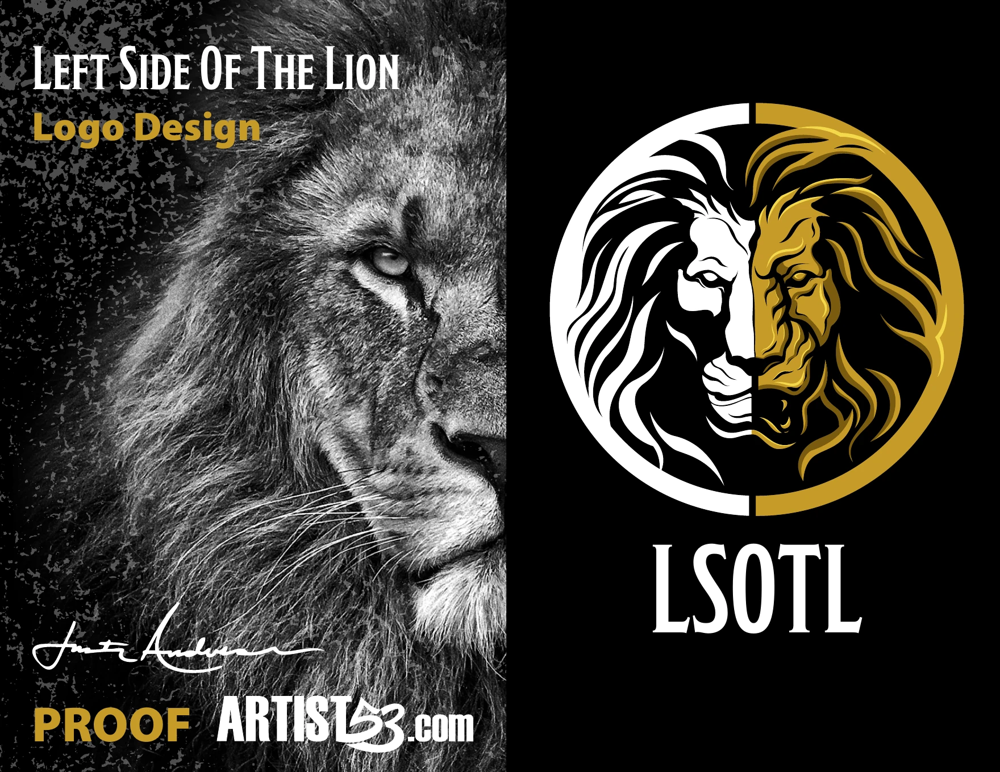
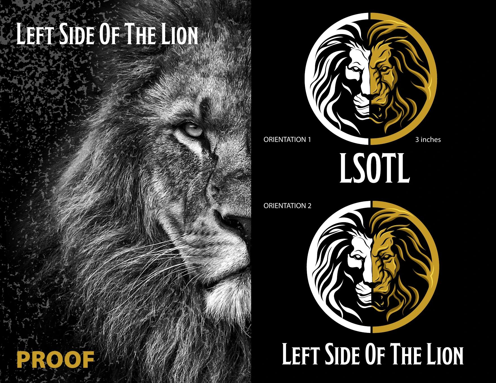
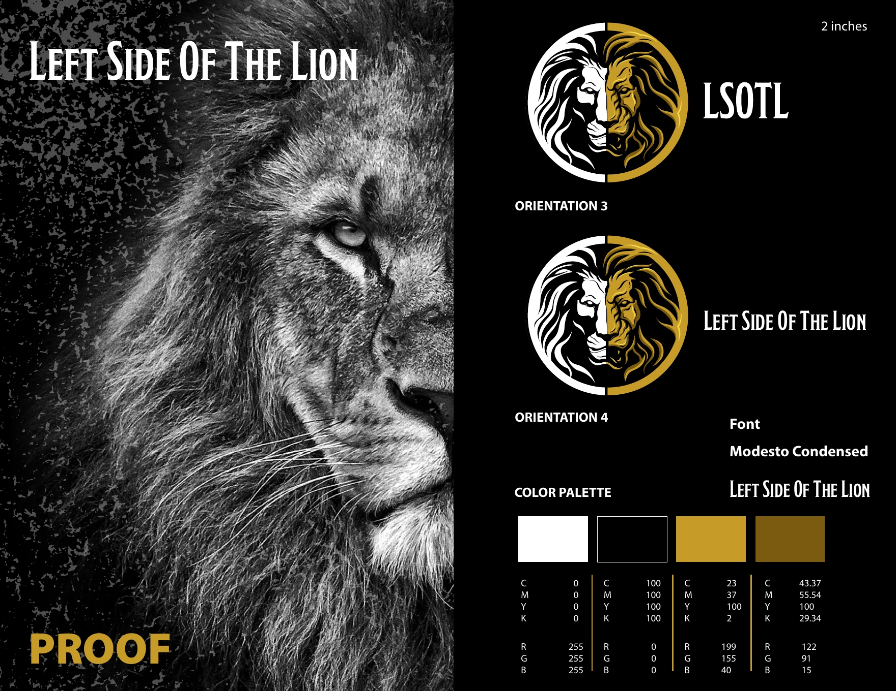
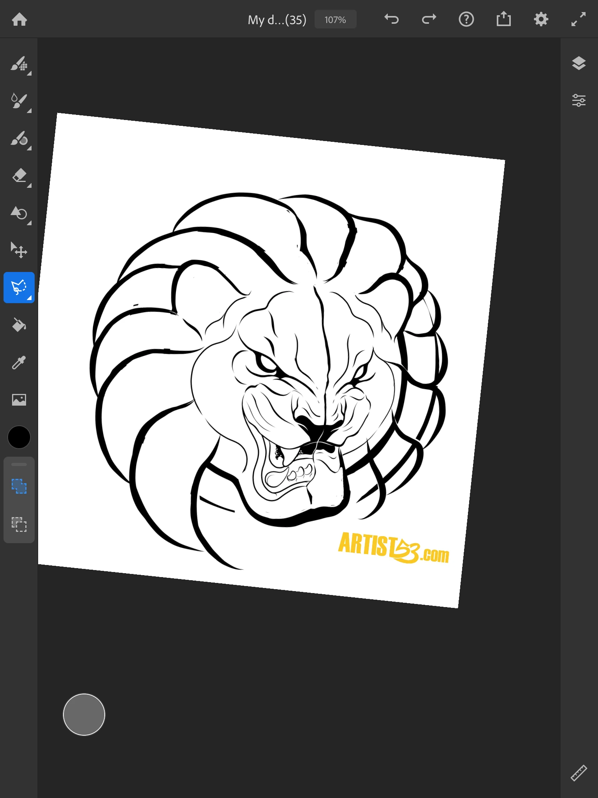
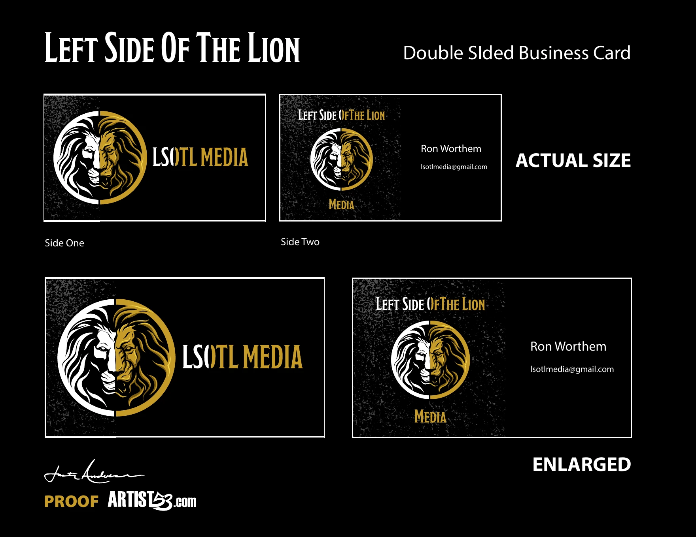
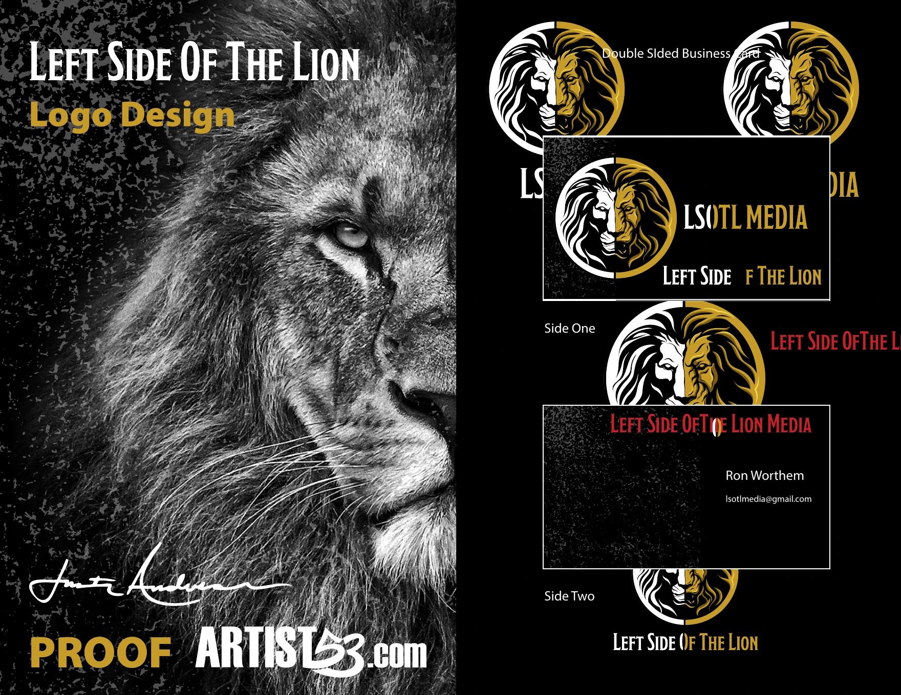

Identity Case Study
Left Side Of The Lion
A bold media identity built around duality, strength and presence. The mark combines two lion treatments inside one circular symbol to create a recognizable brand system for LSOTL Media.
View The ProjectBack To LogosProject Overview
Two Sides. One Identity.
The final mark uses a split lion treatment to express contrast while keeping the identity unified. White, black and gold create a premium visual system that works for media branding, social platforms and business applications.

Logo System
Built To Work In Multiple Formats
The identity was prepared in vertical, horizontal and compact orientations so the lion symbol and name could remain recognizable across different placements and sizes.


Development
From Lion Artwork To Brand Symbol
The lion illustration was refined into a controlled circular mark with mirrored visual weight and a clean split-color treatment. This allowed the character of the lion to stay powerful while becoming easier to reproduce.

Applications
The Identity In Use
The complete system extends naturally into business cards and branded media layouts while preserving the same black, white and gold visual language.

